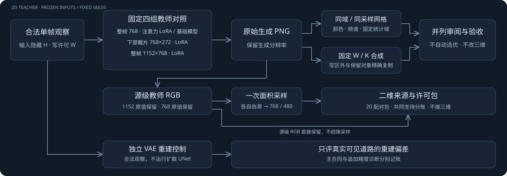
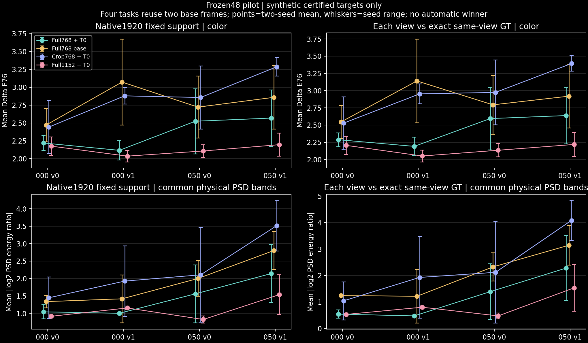
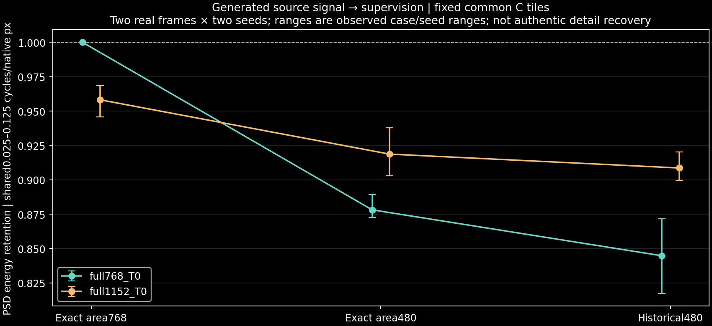

颜色改善具有配对一致性
原图同域、两张底图等权的 ΔE76：整帧768 LoRA 为2.357，整帧1152为2.129；四任务×两seed共8/8配对改善。当前LoRA相对基础模型的色差也在8/8配对中改善。
48 次固定推理已完成。整帧 1152 的合成核心平均色差下降，频谱仅在一半任务与 seed 配对中改善。监督已逐值保留1152源级；降到768/480仍有高频损失，尚未接入三维训练。
原图同域、两张底图等权的 ΔE76：整帧768 LoRA 为2.357，整帧1152为2.129；四任务×两seed共8/8配对改善。当前LoRA相对基础模型的色差也在8/8配对中改善。
共同三频带偏差均值1.436→1.107；1152只有4/8任务-seed配对改善，任务均值为3/4改善。高频能量不能直接等同于正确颗粒，保留全部逐例结果。
主合同4次可见道路重建保留色偏。追加FP32/FP16运算诊断仍有约−2.76～−3.20/255的绿色通道偏置；同fp16权重源下提高运算精度未降低原BF16控制误差。

| 教师对照 | ΔE76 ↓ | RGB MAE（0–255） ↓ | 高通 RMS 比值 · 目标1 | 统一3频带偏差 ↓ | Lab a / b 偏置 |
|---|---|---|---|---|---|
| 整帧 768 · 注意力 LoRA | 2.357 | 3.493 | 0.663 | 1.436 | 0.906 / 0.555 |
| 整帧 768 · 基础模型 | 2.781 | 4.512 | 0.791 | 1.888 | 0.910 / 0.570 |
| 下部裁片 768 · 注意力 LoRA | 2.866 | 4.363 | 0.894 | 2.246 | 0.983 / -0.681 |
| 整帧 1152 · 注意力 LoRA | 2.129 | 3.012 | 0.658 | 1.107 | 0.899 / 0.439 |
| 教师对照 | ΔE76 ↓ | RGB MAE（0–255） ↓ | 高通 RMS 比值 · 目标1 | 统一3频带偏差 ↓ | Lab a / b 偏置 |
|---|---|---|---|---|---|
| 整帧 768 · 注意力 LoRA | 2.428 | 3.576 | 1.101 | 1.173 | 0.910 / 0.556 |
| 整帧 768 · 基础模型 | 2.850 | 4.602 | 1.307 | 1.983 | 0.914 / 0.570 |
| 下部裁片 768 · 注意力 LoRA | 2.962 | 4.449 | 1.473 | 2.295 | 0.987 / -0.679 |
| 整帧 1152 · 注意力 LoRA | 2.152 | 3.041 | 0.975 | 0.837 | 0.899 / 0.439 |
| 教师对照 | ΔE76 ↓ | RGB MAE（0–255） ↓ | 高通 RMS 比值 · 目标1 | 统一3频带偏差 ↓ | Lab a / b 偏置 |
|---|---|---|---|---|---|
| 整帧 768 · 注意力 LoRA | 2.546 | 2.787 | 0.657 | 0.525 | 1.652 / -0.301 |
| 整帧 768 · 基础模型 | 2.328 | 2.638 | 0.647 | 0.564 | 1.459 / -0.033 |
| 下部裁片 768 · 注意力 LoRA | 2.806 | 2.842 | 0.647 | 0.568 | 1.815 / -0.847 |
| 整帧 1152 · 注意力 LoRA | 2.492 | 2.601 | 0.736 | 0.390 | 1.713 / -0.401 |
| 教师对照 | ΔE76 ↓ | RGB MAE（0–255） ↓ | 高通 RMS 比值 · 目标1 | 统一3频带偏差 ↓ | Lab a / b 偏置 |
|---|---|---|---|---|---|
| 整帧 768 · 注意力 LoRA | 2.618 | 2.874 | 1.072 | 0.101 | 1.656 / -0.303 |
| 整帧 768 · 基础模型 | 2.392 | 2.696 | 1.051 | 0.075 | 1.462 / -0.034 |
| 下部裁片 768 · 注意力 LoRA | 2.884 | 2.931 | 1.053 | 0.111 | 1.817 / -0.850 |
| 整帧 1152 · 注意力 LoRA | 2.516 | 2.646 | 1.046 | 0.064 | 1.715 / -0.403 |
先汇总两个 seed，再按底图分层等权。4 个合成任务来自 2 张底图；两 seed 的范围不是置信区间。真实两帧仅评已知可见道路，不能给遮挡道路恢复误差。表中指标均评价原始候选；真实控制不是写回合成的复制像素，W外合成仍精确复制。
高通 σ=2.5 原图像素；RMS 比值接近 1 仍不能证明生成了正确颗粒。频谱主分数是共同三频带的能量比绝对 log₂ 偏差，目标为 0；不跨组比较各自可用带宽的单一总分。三带为 0.025–0.0625、0.0625–0.125、0.125–0.2 周期/原图像素。

已构建20个固定配对候选包：raw86/110、两个seed、整帧768与1152教师。A取真实可见道路，C为孔洞伪教师，S为目标阴影伪教师。源级8项RGB逐值检查通过；1152原值档保留生成源带宽，768与480各自从原源图直接面积采样，不经中间档串联。
下表只度量已有生成信号的功率传递，不度量真实沥青细节或跨教师优劣。C域使用raw86/110各22/59个固定80×80原图窗口，步长40、可重叠；所有方法、seed、输出档与旧链共用支持。S有合法像素，但无完整80×80共同窗口，本项不量化。
| 生成源与输出 | RGB路径 | 共同0.025–0.125频带能量保留 | 较高频带能量保留（频带） |
|---|---|---|---|
| 1152源 → 768 | 单次面积采样 | 95.82% | 59.49%（0.125–0.2） |
| 1152源 → 480 | 单次面积采样 | 91.87% | 71.76%（0.0625–0.125） |
| 1152源 → 旧链480 | 双线性原图＋4×4均值 | 90.86% | 68.21%（0.0625–0.125） |
| 768源 → 480 | 单次面积采样 | 87.81% | 64.17%（0.0625–0.125） |
| 768源 → 旧链480 | 双线性原图＋4×4均值 | 84.47% | 56.02%（0.0625–0.125） |
频率单位为周期/原图像素，保留率相对各自教师源，不是RMS幅度或真实细节百分比。1152→768在较高0.125–0.2频带仅保留59.49%，不能由低频主导的95.82%共同频带均值声称完整保真。源级1152、768和480网格的轴向Nyquist分别为0.3、0.2和0.125；超出目标Nyquist的源能量不能作为独立目标频率保留，混叠不等于细节保存。
| 原帧 / 输出尺寸 | C：基线 / 高分辨率 / 共同 | S：基线 / 高分辨率 / 共同 |
|---|---|---|
| 86 / 480×320 | 5444 / 5456 / 5435 | 971 / 943 / 927 |
| 86 / 768×512 | 14349 / 14231 / 14231 | 2780 / 2621 / 2621 |
| 110 / 480×320 | 10245 / 10265 / 10231 | 2018 / 2041 / 2008 |
| 110 / 768×512 | 26654 / 26525 / 26525 | 5643 / 5430 / 5430 |
A域不变；两seed的此项资格计数相同。C/S既有新增也有剔除，不能把分母变化写成质量改善。共同域目前只是二维来源资格，未来训练还须与同一固定三维资格取交集；完整单侧计数保留在构建receipt。

q_2d仅表示来源与全滤波支持的二值资格，不是正确率或世界高频材质许可。相机K仍为调用方声明，未通过原生栅格化资格。20包均为candidate_only、training_ready=false；不接入三维训练，不扩张父资产高频许可。
本地/远端各8项合同测试、6个W×3视图及42项输出支持检查通过；8项源级逐值一致、4项旧基线包exact。包保留原PNG、model valid与显式视图映射；这些CPU验证不证明真实遮挡道路正确，也不证明三维渲染能力。
只用合法实拍观察与已知可见道路，latent mode 重建不运行扩散 UNet；实际扩散条件采用 latent sample，二者不等价。下表为相对同尺度重采样参考的增量，RGB与绿色通道均以 0–255 表示。
| 主合同控制 | RGB MAE（0–255） | 绿色通道偏置（0–255） | 高通 RMS 比值 |
|---|---|---|---|
| raw086_full768 | 2.662 | -2.508 | 0.998 |
| raw086_full1152 | 2.478 | -2.718 | 0.988 |
| raw110_full768 | 2.505 | -2.559 | 1.003 |
| raw110_full1152 | 2.436 | -2.928 | 1.021 |
同一 fp16 预训练权重源提升为 FP32 或使用 FP16 运算，不等于取得原始全精度模型。4 张合法观察 × 2 精度，另有 1 次 BF16 精确重放门；不加入四组教师均值。
| 运算精度 | 观察数 | 绿色偏置范围（0–255） | RGB MAE范围（0–255） |
|---|---|---|---|
| FLOAT32 | 4 | -3.202 ～ -2.764 | 2.561 ～ 2.741 |
| FLOAT16 | 4 | -3.209 ～ -2.763 | 2.564 ～ 2.740 |
FP32 / FP16 仍保留约 −2.76～−3.20 /255 的绿色偏置，未降低原 BF16 控制误差；当前证据不支持把 BF16 作为主要原因。该诊断不等价于完整扩散链路的精度消融。
SD1.5 Inpainting；注意力 LoRA 为既有第600步权重。DDIM 20步、CFG 3、eta 0、strength 1；seed 101 / 202；正向提示词与空负向提示词固定。
训练视野是原图下部 [0,600,1920,1280]；768×272 裁片与整帧768×512均为每模型像素2.5个原图像素。视野控制没有改变道路像素倍率。
20个显式视图二维配对候选包已通过CPU合同检查，源级RGB、来源和许可分账保留。q只表示二维来源资格，相机仍未通过原生栅格化验收；包均training_ready=false，未接入三维训练或替换默认资产。
W/K许可保持冻结。更大输入隐藏范围没有扩大写回区；保留对象和许可外像素保持精确复制。没有默认资产替换或自动选优。
| 项目 | 实际记录 |
|---|---|
| 主合同扩散 | 48 次 |
| 主合同独立VAE | 4 次 encode/decode |
| 追加VAE精度诊断 | 9 次（1工程重放＋8诊断） |
| 主队列墙钟 | 245.23 秒；包含加载与主VAE控制 |
| 主队列模型加载 | 4.083 秒；包含在主队列墙钟内 |
| 主队列峰值 PyTorch allocated | 4.907 GiB；不使用 nvidia-smi reserved 代替 |
| 追加精度诊断墙钟 | 24.922 秒 |
| 训练 / 三维修改 / 自动选优 | 0 / 0 / 否 |
| 历史重放 | 6/6；raw_model、raw_native、final_native逐位一致 |
| 二维配对监督包 | 20包；CPU构建27.512秒，GPU 0，三维前向0 |
| 独立GPU账合计 | 48次扩散 / 13次独立VAE；失败0，训练0 |
小时级新训练仍需先约十分钟真实 smoke，覆盖保存、评价、完整恢复及下一阶段入口；本轮没有启动新训练。不同画幅计算量不同，同数字seed也不构成逐像素相同噪声。
此为轻量静态摘要。完整交互图、原始生成PNG和固定窗口图保留在交付文件包，推理原PNG保留远端。